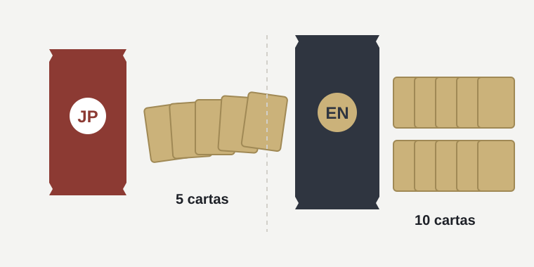
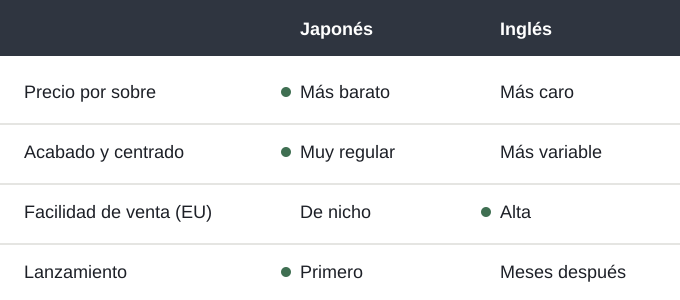

¿Coleccionar en japonés o en inglés?
Las mismas cartas salen en varios idiomas, pero no son el mismo producto. Esto es lo que cambia y cómo lo decido yo.

Cuando empecé compraba solo en inglés, porque era lo que había en las tiendas de Barcelona. Al tiempo un amigo que vive en Japón me trajo unos sobres y descubrí que el producto japonés funciona de otra manera.
Qué cambia entre un idioma y otro
- Calendario. Las expansiones salen antes en Japón y, meses después, en inglés reorganizadas en sets más grandes que juntan cartas de varias japonesas.
- Formato del sobre. El sobre japonés es más pequeño y barato por unidad; el inglés trae más cartas, contando comunes y la carta de energía.
- Acabado. Muchos coleccionistas valoran el centrado y el corte de la impresión japonesa. En inglés el centrado varía más de una carta a otra.
- Mercado. Para vender o intercambiar en Europa, el inglés se mueve más rápido. El japonés tiene su público, pero es más de nicho.

Cómo lo decido yo
Mi regla es sencilla: si la carta la quiero para mirarla, la busco en japonés; si cuento con venderla o cambiarla algún día, en inglés. Las ilustraciones son las mismas, así que para la carpeta personal el japonés me sale mejor de precio y de acabado.
Lo que no recomiendo es mezclar idiomas dentro de un mismo set en la carpeta: queda raro y cuesta más saber qué te falta.